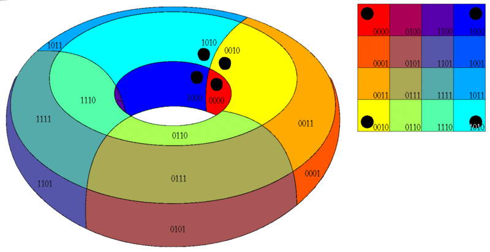
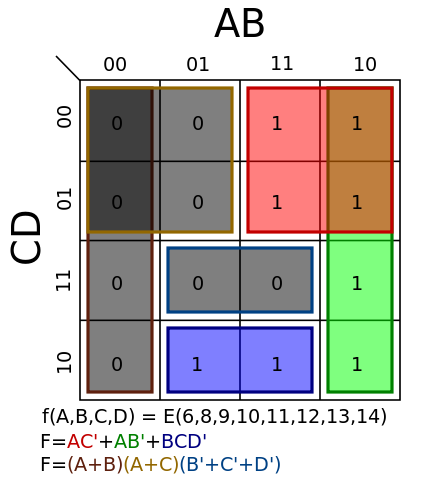
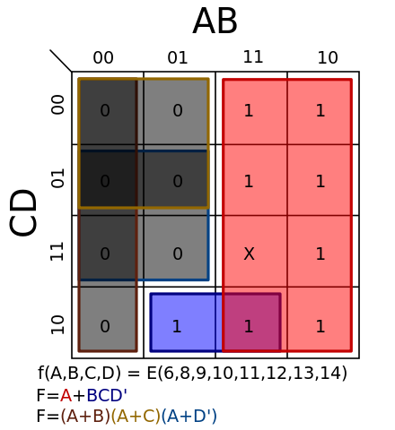

布尔函数的表示与化简
Table of Contents
在具体介绍布尔函数之前，首先对布尔代数做一个简单的介绍。
1 布尔代数简介
布尔代数是代数的一个数学分支，它的变量取值是真值 真 或 假 ，通常用符号 1 和 0 来表示。 布尔代数的主要运算包括合取 与 (conjunction)(and)，记作∧；析取 或 (disjunction)(or)，记作∨；否定 非 (negation)(not)，记作¬。
布尔代数由 乔治·布尔（George Boole）在他的第一本书 The Mathematical Analysis of Logic(1847) 中引入，并在他的另一本书 An Investigation of the Laws of Thought(1854) 中得到了完善。 “布尔代数“ 这个术语最初由 Sheffer 与 1913 提出。
布尔代数已经称为数字电子的基础，在所有现代编程语言中都提供了布尔代数操作。布尔代数也被用于集合论和统计学。
1.1 变量取值范围
与初等代数变量的取值是数字不同，布尔代数中，变量的值只能是真值 真 或 假 。这些值是由 位 表示，写作 1 和 0。它们和整数 1 和 0 并不一样，1 和 0 在这里仅仅是符号，而不是数字。
1.2 基本运算
布尔代数的基本运算包括
- AND，写作 x ∧ y，当且仅当 x = y = 1 时 x ∧ y = 1，否则为 0。
- OR，写作 x ∨ y，当且仅当 x = y = 0 时 x ∨ y = 0，否则为 1。
NOT，写作 ¬，当 x = 0 时 ¬x = 1，当 x = 1 时 ¬x = 0。
它们的运算规则也可以用真值表来表示：
x y x ∧ y x ∨ y 0 0 0 0 1 0 0 1 0 1 0 1 1 1 1 1 x ¬x 0 1 1 0
如果真值 0 和 1 被当作整数的话，这些运算也可以表示为普通的运算：
\(x ∧ y = xy = min(x, y)\)
\(x ∨ y = x + y - xy = max(x, y)\)
\(¬x = 1 - x\)
你可能会认为只有非运算和与或两者之一才是基础的，因为可以通过非运算和与运算导出或运算，也可以通过非运算和或运算导出与运算：
\(x ∧ y = ¬(¬x ∨ ¬y )\)
\(x ∨ y = ¬(¬x ∧ ¬y )\)
这三个运算被称作基础运算，”基础“意味着其他的布尔运算可以通过它们的组合而得到。例如：异或，同或
\(x ⊕ y = (x ∨ y) ∧ ¬(x ∧ y) = (x ∧ ¬y) ∨ (¬x ∧ y)\)
\(x ≡ y = ¬(x ⊕ y) = (x ∧ y) ∨ (¬x ∧ ¬y)\)
1.3 运算律
若将 ∨ 与加匹配，∧ 与乘匹配，布尔运算满足许多普通的代数运算规律：
结合律：\(x ∨ (y ∨ z) = (x ∨ y) ∨ z, x ∧ (y ∧ z) = (x ∧ y) ∧ z\)
交换律：\(x ∧ y = y ∧ x, x ∨ y = y ∨ x\)
分配律：\(x ∧ (y ∨ z) = (x ∧ y) ∨ (x ∧ z)\)
诸如 x + 0 = x，x × 1 = x，x × 0 = 0 也有相似的规律
\(x ∨ 0 = x, x ∧ 1 = x, x ∧ 0 = 0\)
除了普通代数中的运算律外，布尔代数也有它独有的运算律：
∨ 的吸收律： \(x ∨ 1 = 1\)
∨ 和 ∧ 的幂等律： \(x ∨ x = x,x ∧ x = x\)
组合吸收律：\(x ∧ (x ∨ y) = x, x ∨ (x ∧ y) = x\)
另一种分配律：\(x ∨ (y ∧ z) = (x ∨ y) ∧ (x ∨ z)\)
互补律： \(x ∧ ¬x = 0,x ∨ ¬x = 1\)
De Morgan：\(¬x ∧ ¬y = ¬(x ∨ y), ¬x ∨ ¬y = ¬(x ∧ y)\)
2 布尔函数的表示方法
布尔函数是指那些参数和函数值都属于一个二值集合的函数，二值集合通常是{0，1}。它有时也被称为”开关函数”。
布尔函数具有如下形式：
\(f:B^k \rightarrow B\)
其中，B = {0，1} 是布尔域(boolean domain)，k 是一个非负整数，对每一个 k，都有 \(2^{2^k}\) 个布尔函数。
布尔函数的表达方式有很多，常见的有表达式，真值表，卡诺图(Karnaugh map)，逻辑图，波形图。
2.1 表达式表示
逻辑表达式由逻辑变量和逻辑运算符号组成，用于表示变量之间逻辑关系。常用的逻辑表达式有与或表达式，或与表达式与非与非表达式，或非或非表达式，与或非表达式。
与或表达式指两个或多个与项通过或连接在一起，例如：
\(F = AB + A\overline{C}D\)
或表达式指两个或多个或项通过与连接在一起，比如：
\(F = (A + B)(A + C + \overline{D})\)
与非与非指对两个或多个与项分别进行非运算并通过与运算连接，再对整个项进行非运算，例如：
\(F = \overline{(\overline{AB})(\overline{CD})}\)
或非或非指对两个或多个或项分别进行非运算并通过或运算连接，再对整个项进行非运算，例如：
\(F = \overline{\overline{A + B} + \overline{C + D}}\)
与或非表达式指两个或多个与项通过或运算连接，并对整个式子进行非运算，例如：
\(F = \overline{AB + CD}\)
除了上面提到的几种表达式，还需要注意两种标准表达式：标准与或表达式和标准或与表达式。
2.1.1 标准与或表达式
标准与或表达式的每一个与项都包含了所有相关的逻辑变量。在每一个与项中，每个变量以原变量或反变量的形式出现且仅出现一次。这样的与项被称为标准与项，或称为最小项。
若一个逻辑函数有 n 个逻辑变量，则标准与项的所有可能出现的项有 \(2^n\) 个。
最小项的主要性质有：
- 每个最小项都与变量的唯一的一个 取值组合 相对应，只有该取值集合使这个最小项取值为 1，其余任何取值组合均使该最小项为 0。
- 所有可能的最小项相或，结果为 1。
- 任意两个不同的最小项相与，结果为 0。
表示最小项对应的 取值组合时 ，如果变量为原变量，则对应组合中变量取值为 1，否则为 0。例如 A，B，C 的最小项 \(A\overline{B}C\) 对应的取值组合为 101，大小为 5。该项可计为 \(m_{\rm 5}\) 。
一个逻辑函数的表达式并不唯一，但一个逻辑函数的标准与或表达式是唯一的。
若一个表达式不是标准与或表达式，可以通过使表达式中的非标准与项乘上缺少变量和其反变量的逻辑和，直到每一个与项都是最小项为止。
例如：\(F = AB + AC\) 不是一个标准与或表达式，我们可以这样做：
\(AB + AC =\)
\(AB(C + \overline{C}) + A(B + \overline{B})C =\)
\(ABC + AB\overline{C} + ABC + A\overline{B}C =\)
\(ABC + AB\overline{C} + A\overline{B}C\)
该式还可以写成 \(m_{\rm 5} + m_{\rm 6} + m_{\rm 7}\) ，或\(\sum m(5, 6, 7)\) 。
2.1.2 标准或与表达式
标准或与表达式的每一个与项都包含了所有相关的逻辑变量。在每一个或项中，每个变量以原变量或反变量的形式出现且仅出现一次。这样的或项被称为标准与项，或称为最大项。
若一个逻辑函数有 n 个逻辑变量，则标准或项的所有可能出现的项有 \(2^n\) 个。
最大项的主要性质有：
- 每个最小项都与变量的唯一的一个 取值组合 相对应，只有该取值集合使这个最小项取值为 0，其余任何取值组合均使该最小项为 1。
- 所有可能的最大项相与，结果为 0。
- 任意两个不同的最小项相或，结果为 1。
表示最大项对应的 取值组合时 ，如果变量为原变量，则对应组合中变量取值为 0，否则为 1。例如 A，B，C 的最大项 \(A+\overline{B}+C\) 对应的取值组合为 010，大小为 2。该项可计为 \(M_{\rm 2}\) 。
一个逻辑函数的表达式并不唯一，但一个逻辑函数的标准或与表达式是唯一的。
若一个表达式不是标准或与表达式，可以通过使表达式中的非标准或项加上缺少变量和其反变量的逻辑与，直到每一个与项都是最小项为止。
例如：\(F = AB + AC\) 不是一个标准与或表达式，我们可以这样做：
\(AB + AC = A(B+C) =\)
\((A +B\overline{B} + C\overline{C})(A\overline{A} + B + C)=\)
\((A + B + C)(A + \overline{B} + C)(A + B + \overline{C})(A + \overline{B} + \overline{C})(A + B + C)(\overline{A} + B + C) =\)
\((A + B + C)(A + \overline{B} + C)(A + B + \overline{C})(A + \overline{B} + \overline{C})(\overline{A} + B + C)\)
该式还可以写成 \(M_{\rm 0}M_{\rm 1}M_{\rm 2}M_{\rm 3}M_{\rm 4}\) ，或\(\prod m(0, 1, 2, 3, 4)\) 。
2.1.3 标准与或和或与的相互转化
从上面的两个例子可以看出，同一函数的标准与或表达式的最小项编号和标准或与表达式的最大项编号是互补的。
在标准与或表达式中出现的最小项编号不会在其标准或与表达式的最大项编号中出现，反之亦然。
\(F = AB + AC = \sum m(5, 6, 7) = \prod m(0, 1, 2, 3, 4)\)
2.2 真值表表示
真值表是用来反映变量所有取值集合及对应函数值得表格。
例如， 布尔函数 \(F = AB + AC\) 对应的真值表是：
| A | B | C | F |
|---|---|---|---|
| 0 | 0 | 0 | 0 |
| 0 | 0 | 1 | 0 |
| 0 | 1 | 0 | 0 |
| 0 | 1 | 1 | 0 |
| 1 | 0 | 0 | 0 |
| 1 | 0 | 1 | 1 |
| 1 | 1 | 0 | 1 |
| 1 | 1 | 1 | 1 |
2.3 卡诺图表示
卡诺图 （Karnaugh map）是一种简化布尔代数表达式的方法。它是对 Edward Veith 的 Veitch chart 的改进。Veitch chart 因此以 Marquand-Veitch diagrams 这个名字而为人所知，卡诺图也叫 Karnaugh-Veitch 图（KV maps）。
卡诺图利用了人类的模式识别能力（humans' pattern-recognition capability）来消除多余的计算。它也可以快速消除潜在的 竞争冒险 （Race hazards） 。
卡诺图是一个二维表格，在卡诺图中，由行和列两组变量对应的每一个小方块都代表了逻辑函数的一个最小项，变量取值为 1 表示原变量，变量取值为 0 表示反变量。卡诺图的变量排布顺序是格雷码顺序而不是自然数顺序，这样就保证了相邻变量组合的邻接性。例如变量组合 AB 在卡诺图中对应的顺序应该是 00 01 11 10，而不是 00 01 10 11。直观上看，格雷码的每一个数的后一位都与后一个数的前一位相等，这就好像是最简单的贪吃蛇游戏，从屏幕的上面钻出去了，又从屏幕的下面进来。
还是以 \(F = AB + AC\) 为例，它的卡诺图表示：
| A\BC | 00 | 01 | 11 | 10 |
|---|---|---|---|---|
| 0 | 0 | 0 | 0 | 0 |
| 1 | 0 | 1 | 1 | 1 |
这张图片能够很好的说明卡诺图中变量组合的邻接性质：（图片来源：维基百科）

Figure 1: 卡诺图球
图中的四个黑点尽管在卡诺图的四个角上，但是它们是邻接的。
这张图演示了动态变化的效果（图片来源：维基百科）

Figure 2: 折叠展示
2.4 逻辑图表示
由逻辑门电路符号构成的，用来表示逻辑变量之间关系的图形称为逻辑电路图，简称逻辑图。
常见的逻辑门电路符号有 是门 （Yes gate）， 非门 ， 与门 ， 或门 ， 与非门 ， 或非门 ， 同或门 ， 异或门 。
| buffer | not | and | or |
|---|---|---|---|
| NAND | NOR | XOR | XNOR |
 |
\(F=AB+AC\) 的逻辑图表示为：（没有现成的图片）
+----+
B -----| OR | +-----+
C -----| |----------| AND |------- F
+----+ +----| |
| +-----+
A ----------------+
2.5 波形图表示
波形图绘制了输入输出之间不同时刻的电平变化，也可以表示输入端在不同逻辑信号作用下所对应的输出信号之间的逻辑关系。
还是以 \(F = AB + AC\) 为例，其波形图可表示为：
--- --- --- --- 1
A --- --- --- --- 0
--- --- --- --- 1
B --- --- --- --- 0
--- --- --- --- 1
C --- --- --- --- 0
--- --- --- 1
F --- --- --- --- --- 0
3 布尔函数的化简
同一逻辑函数可以采用不同的逻辑电路图来实现，而这些逻辑电路图所采用的器件的种类或数量可能会有所不同，因此化简逻辑函数可以简化电路，节省器件，降低成本，提高系统可靠性。因此，化简逻辑函数对工程设计来说具有重要意义。
逻辑函数的最简表达式有很多种，最常用的有最简与或表达式和最简或与表达式。不同的表达式最简定义也不同。
与或式的最简标准是：含的与项个数最少，各个与项中变量个数最少。
或与式的最简标准是：含的或项个数最少，各个或项中变量个数最少。
逻辑函数的简化方式一般来说有三种，即公式法、表格法和计算机化简。
3.1 公式法化简
公式法就是反复利用布尔代数中的基本公式和常用公式，消去与或逻辑函数式中多余的乘积项和每个乘积项中多余的变量，以求得到逻辑函数表达式的最简形式。布尔运算的优先级为：非 > 与 > 或。公式法没有固定的步骤。
常用的公式有：
\(AB + A\overline{B} = A\)
\(A + AB = A\)
\(A + \overline{A}B = A+B\)
\(AB + \overline{A}C + BC = AB + \overline{A}C\)
\(\overline{A\overline{B} + \overline{A}B} = \overline{A}·\overline{B} +AB\)
3.2 卡诺图化简
在卡诺图中，凡邻接的两个小方格具有逻辑相邻性，即它们只有一个变量的取值不同，其他变量取值相同。逻辑相邻的最小项相或时，可以使用 \(AB + A\overline{B}=A\) 进行合并。
- 两个相邻小方格可以合并为一个乘积项，且消去一个变量。
- 四个相邻的小方格可以合并为一个乘积项，并消去两个变量。
- \(2^k, (k \in N)\) 个相邻的小方格可合并为一个乘积项，且消去 k 个变量。
具体步骤：
- 将相邻的 N (\(N = 2^k\)) 个为 1 的小方格圈在一起，画图时要将尽可能多的小方块圈在一起。一般先画大圈，最后圈孤立的小方格。
- 所画的圈内必须包含一个只属于该圈的 1，否则会得到冗余项。
- 所画的圈必须是矩形。
例子：（图片来源：维基百科）

Figure 3: 卡诺图图解
逻辑函数 \(F = \sum m(6, 8, 9, 10, 11, 12, 13, 14)\) 的卡诺图如图所示，红色圈和绿色圈分别圈了四个 1，故可分别消去两个变量，蓝紫色圈内有两个 1，可消去一个变量。
红色部分消去 BD 得到 \(A\overline{C}\) ，绿色部分消去 CD 得到 \(A\overline{B}\) ，蓝色部分消去 A 得到 \(BC\overline{D}\) 。
最后得到最简表达式：\(F = A\overline{C}+A\overline{B}+BC\overline{D}\) 。
如果要求反函数，圈 0 而不是 1，并消去相应的项即可。
3.2.1 具有无关项时的情况
卡诺图可以轻易化简带有无关项的逻辑函数。
无关项大致分为两种情况，它们分别是：
- 输入变量的某些取值组合现实中根本不存在，或者某些取值存在，但对函数的输出没有任何影响。这类取值组合称为任意项。
- 输入变量的某些取值集合是存在的，但是逻辑函数不允许它的出现，如果出现，它可能会导致逻辑函数输出混乱。这类取值组合称为约束项。
无关项在卡诺图中用 \(X\) 或 \(\varnothing\) 表示。由于无关项取值对函数输出没有影响，故进行化简时，可以根据具体情况将无关项的取值看作 0 或 1 来进行进一步的化简。
例子如下：（图片来源：维基百科）

图中的 \(AB\overline{C}D\) 是一个无关项，它的出现使得红色矩形得以完整的形成。
3.3 计算机化简
当逻辑函数中的项过多时，公式法化简显得有些力不从心，卡诺图仅对于变量个数小于 4 的情况比较有效，随着变量个数的增多，卡诺图的直观性越来越差。计算机化简是最好的选择。
3.3.1 Quine-McCluskey algorithm
奎因-麦克拉斯基算法是一种最简化布尔函数的方法，它由 Willard V. Quine 开发，并由 Edward J. McCluskey 扩展。它在功能上和卡诺图是等价的，但是它的表格式形式能够更加高效地用于计算机算法，而且它也给出了检查是否已经达到布尔函数最简形式的确定性方法。
在介绍算法之前，先介绍一下什么是蕴涵项（implicant）
- 蕴涵项
在布尔逻辑的与或表达式中，如果与项 P 满足：
- P 中的变量都是函数的参数
- 对于所有使 P 的值为 1 的变量组合，布尔函数 F 也等于 1
那么称 P 是函数 F 的蕴涵项。
根据蕴涵项，可以定义质蕴涵项和本质蕴涵项。
- 如果 P 是 F 的蕴涵项，且如果从 P 中去除任何变量都将导致 P 称为 F 的非蕴涵项，则称 P 是 F 的质蕴涵项（prime implicants）。
- 函数的本质蕴涵项（essential prime implicants）指包括了所有函数输出的质蕴涵项的组合。其他任意质蕴涵项的组合都不可能包含函数的全部输出。 Essential prime implicants (aka core prime implicants) are prime implicants that cover an output of the function that no combination of other prime implicants is able to cover.
- 算法内容
该算法包括两个步骤：
- 找到函数的质蕴涵项
- 在质蕴涵表中使用这些质蕴涵项来找到函数的本质蕴涵项
- 算法复杂度
尽管在处理超过 4 个变量时该算法比卡诺图更好，Quine-McCluskey 的使用范围还是很有限，因为它要解决的问题是 NP-完全 问题。该算法的运行时间随着变量的个数将按指数规律增长。对一个有 n 个变量的函数，它的质蕴涵项的个数可以高达 \(3^nln(n)\) 个。
该算法的第二步接近于解决 集合覆盖问题 （set cover problem），这个问题是 NP-hard 的。
- 具体例子
在例子中，使用的函数为四参数布尔函数 \(f: \{0, 1 \}^4 \rightarrow \{ 0, 1 \}\) ，它的表达式表示为 \(f(A, B, C, D) = \sum m(4, 8, 10, 11, 12, 15) + \sum \varnothing (9, 14)\) 。
该函数表明：当变量组合为 4，8，10，11，12 和 15 时，函数值为 1，无关项变量组合为 9 和 14。
我们可以轻易地得到该布尔函数的标准与或表达式，不考虑无关项，该函数可以写作： \(f_{\rm A, B, C, D} = \overline{A}B\overline{C}·\overline{D} + A\overline{B}·\overline{C}·\overline{D} + A\overline{B}C\overline{D} + A\overline{B}CD + AB\overline{C}·\overline{D} + ABCD\) 。
第一步：得到质蕴涵项
这当然算不上最小化。为了对它进行优化，将最小项按变量组合中 1 的个数进行排序（无关项也算在其中），得到一张表格：
含 1 的数量 最小项 二进制表示 1 m4 0100 1 m8 1000 2 (m9) 1001 2 m10 1010 2 m12 1100 3 m11 1011 3 (m14) 1110 4 m15 1111 现在，可以开始组合最小项了。如果两个最小项只有一个二进制位不同，那么不同的二进制位可以使用
-来代替，以此表明它的无关性。不能进一步合并的项则以*结尾。例如，1000和1001可以组合成为100-。使用
-和*，我们可以对最小项的组合使用这张表格来表示出来。含 1 的数量 最小项 0-Cube 2 - 蕴涵项 2-Cube 1 m4 0100 m(4, 12) -100* 1 m8 1000 m(8, 9) 100- 1 - - m(8, 10) 10-0 1 - - m(8, 12) 1-00 2 m9 1001 m(9, 11) 10-1 2 m10 1010 m(10, 11) 101- 2 - - m(10, 14) 1-10 2 m12 1100 m(12, 14) 11-0 3 m11 1011 m(11, 15) 1-11 3 m14 1110 m(14, 15) 111- 4 m15 1111 - - 进一步合并的时候，
-就可以看作一个数了，例如，-110和-100可以组合成为-1-0，但-位置不同则不能组合。含 1 的数量 最小项 0-Cube 2 - 蕴涵项 2-Cube 4 - 蕴涵项 4-Cube 1 m4 0100 m(4, 12) -100* m(8, 9, 10, 11) 10–* 1 m8 1000 m(8, 9) 100- m(8, 10, 12, 14) 1–0* 1 - - m(8, 10) 10-0 - - 1 - - m(8, 12) 1-00 - - 2 m9 1001 m(9, 11) 10-1 m(10, 11, 14, 15) 1-1-* 2 m10 1010 m(10, 11) 101- - - 2 - - m(10, 14) 1-10 - - 2 m12 1100 m(12, 14) 11-0 - - 3 m11 1011 m(11, 15) 1-11 - - 3 m14 1110 m(14, 15) 111- - - 4 m15 1111 - - - - 在这个例子中，大小为 4 的蕴涵项不能进一步组合了。一般而言，这个组合过程应该进行到不能进行为止。
第二步：得到本质蕴涵项
现在，我们开始建立本质蕴涵项表。现在我们已经得到了质蕴涵项，依照质蕴涵项的生成顺序从上到下排布得到一张质蕴涵项表。无关项不放在最前面 —— 它们被忽略了，因为它们不是必要输入。
4 8 10 11 12 15 -> m(4, 12)* x m(8, 9, 10, 11) x x x m(8, 10, 12, 14) x x x m(10, 11, 14, 15)* x x x 为了找到本质蕴涵项，我们从第一行开始：我们必须寻找只有一个
x的列，如果某一列只有一个x，那就说明这个最小项只能被一个质蕴涵项所覆盖。覆盖最小项的质蕴涵项就是本质蕴涵项。例如，在第一列，对于最小项 4，只有一个
x，这就说明 m(4, 12) 是本质的。同理，m(10, 11, 14, 15) 也是本质的。在表格中把这两个蕴涵项用*标注。第二个质蕴涵项可以被第三个和第四个“覆盖”，第三个质蕴涵项可以被第一个和第二个覆盖，因此两者都不是本质的。如果一个质蕴涵项是本质的，那么就必须在最小布尔方程中包含它。在某些情况下，本质蕴涵项不足以覆盖所有的最小项，这种情况需要进行另外的归约过程。最简单的方法是试错法，更加系统的方法是 Petrick's method。在例子中，本质蕴涵项不足以覆盖所有最小项，因此，本质蕴涵项可以和两个非本质蕴涵项的其中之一进行组合得到一个方程：
\(f_{\rm A, B, C, D} = B·\overline{C}·\overline{D} + A\overline{B} + AC\)
或 \(f_{\rm A, B, C, D} = B·\overline{C}·\overline{D} + A\overline{D} + AC\)
它们都等价于原来的冗长等式：
\(f_{\rm A, B, C, D} = \overline{A}B\overline{C}·\overline{D} + A\overline{B}·\overline{C}·\overline{D} + A\overline{B}C\overline{D} + A\overline{B}CD + AB\overline{C}·\overline{D} + ABCD\)
4 参考资料
《数字电子技术基础》（第三版）—— 李庆常，王美玲
Boolean algebra : https://en.wikipedia.org/wiki/Boolean_algebra
Karnaugh map : https://en.wikipedia.org/wiki/Karnaugh_map
Logic gate : https://en.wikipedia.org/wiki/Logic_gate
Quine-Macluskey algorithm : https://en.wikipedia.org/wiki/Quine%E2%80%93McCluskey_algorithm
Implicant : https://en.wikipedia.org/wiki/Implicant

{kind=link}
{kind=link}
{kind=link}
{kind=link}